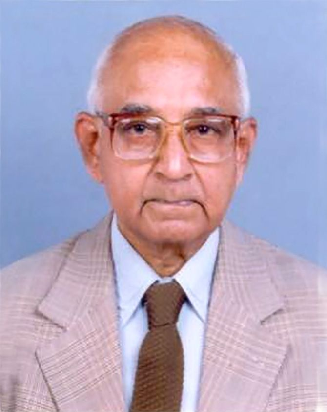

An Indian computer and cognitive scientist and father of computer science research

Here's a timeline of Rangaswamy Narasimhan's life::
1926 - born on 17 April 1926 in Chennai in the south Indian state of Tamil Nadu.
1947 - graduated with honours in Telecommunication Engineering from College of Engineering, Guindy,[7] then part of University of Madras.
1954 - returned to India, accepting Homi J. Bhabha's invitation to join the project team set up by the TIFR Mumbai for the development of the first indigenous computer.
1961 - went back to Illinois, US to conduct further research on cognitive science at the University of Illinois at Urbana Champaign.
1963 - In interdepartmental Electronics Committee Narasimhan was made the chairman of one of the sub committees.
1975 - connected with TIFR at their National Centre for Software Development Computing Techniques.
1976 - received the Homi J. Bhabha Award from the University Grants Commission.
1977 - In CMC Limited as a fully owned government company Narasimhan as its founder chairman.
1981 - Modeling Language Behaviour. Berlin: Springer Verlag.
1988 - member of the Scientific Advisory Council of the Indo-French Centre for the Promotion of Advanced Research.
1990 - retired from TIFR service as a professor of eminence.
2001 - retained his association with CMC past his retirement in the capacity as an advisor.
2007 - died at the age of 81, in Bengaluru in Karnataka.
Awards and Honours:
1977 - Government of India awarded him the civilian honour of Padma Shri
1988 - Om Prakash Bhasin Award was conferred on him
1994 - Dataquest magazine selected him for their Lifetime Achievement Award